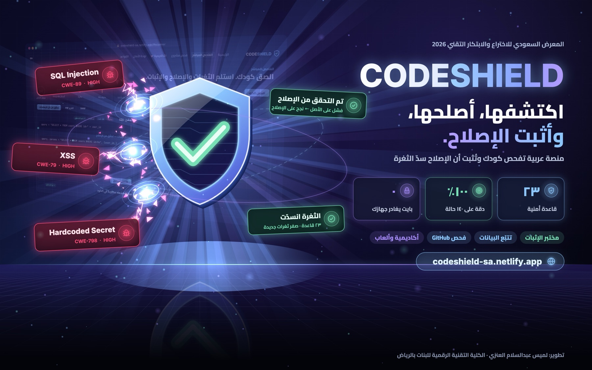

كودشيلد
منصة ويب عربية تفحص الكود بحثًا عن الثغرات الأمنية داخل المتصفح، وتشرح كل ثغرة بالعربية، وتقترح إصلاحًا جاهزًا، ثم تثبت أن الإصلاح أغلق الثغرة فعلًا.

المشكلة
تبدأ أغلب الثغرات الأمنية من سطر كود صغير، وغالبًا لا يدرك المبرمج المبتدئ وجودها. تشير أدوات الفحص إلى المشكلة، لكنها تترك المبرمج يخمّن: هل نجح الإصلاح فعلًا؟ كما أن أغلبها باللغة الإنجليزية ومعقّد، ويتطلب كثير منها رفع الكود إلى خوادم خارجية.
أردتُ أداة يفتحها المبتدئ، ويفهمها بالعربية، ويثق بها، دون أن يغادر كوده جهازه.
ماذا تقدّم المنصة
الفاحص المباشر
الصق الكود لتظهر النتائج في جزء من الثانية، عبر 23 قاعدة مرتبطة بتصنيفات CWE وقائمة OWASP Top 10.
مختبر الإثبات
يُفحص كل إصلاح مرتين: يجب أن تظهر الثغرة في السطر الأصلي، وأن تختفي من السطر المُصلَح.
شرح بالعربية
تشرح كل نتيجة سبب خطورتها، وكيف قد يستغلها المهاجم، وطريقة إصلاحها.
الأكاديمية واللعبة
دروس قصيرة ولعبة «صيد الثغرات» بوقت محدد، مع نقاط ومستويات وشارات.
المشاريع والتقارير
فحص مستودع GitHub أو مجلد محلي، وتصدير تقرير PDF أو ملف SARIF أو الملف المُصلَح.
الخصوصية أولًا
يعمل كل شيء داخل المتصفح، وتُحفظ النتائج محليًا، ويعمل حتى دون اتصال بالإنترنت.
لقطات من المنصة
بالأرقام
بكل شفافية: هذه الأرقام من مجموعة اختبار كودشيلد (140 حالة) التي كُتبت مع القواعد، فهي اختبار لمنع التراجع وليست معيارًا مستقلًا. وعند تجربته على مشروع حقيقي (PyGoat: 150 ملفًا و8,067 سطرًا) ظهرت 3 إنذارات خاطئة وجرى تصحيحها. والقياس على OWASP Benchmark ضمن الخطوات القادمة.
دوري في المشروع
- الفكرة والمشكلةرصدتُ الفجوة وحدّدتُ الفئة المستهدفة.
- المنتج والتجربةصمّمتُ المزايا والواجهة العربية ومسار التعلّم.
- التطويرطوّرتُ التطبيق باستخدام HTML وCSS وJavaScript، مستعينةً بأدوات الذكاء الاصطناعي في البرمجة.
- الاختبار والقياسكتبتُ مجموعة الاختبار، وجرّبتُ الأداة على مشروع حقيقي، وعالجتُ أخطاءها.
ما تعلّمته
- الأمان في التفاصيل. يكفي سطر واحد يدمج مدخلات المستخدم في استعلام لفتح ثغرة.
- الاقتراح ليس إصلاحًا. لهذا بنيتُ مختبر الإثبات: على كل إصلاح أن يثبت نفسه.
- الأرقام الصادقة تبني الثقة. الإفصاح عمّا لا تستطيعه الأداة بعدُ جزءٌ من بنائها بإتقان.
الخطوات القادمة
تتبّع البيانات عبر الدوال
تحليل AST، وتشغيل اختبارات الوحدة المولَّدة داخل المتصفح.
إصلاحات يصوغها الذكاء الاصطناعي ويتحقق منها المحرك
مع إبقاء محرك القواعد بوابةً للتحقق، وقياس الدقة على OWASP Benchmark.
جرّبها بنفسك
الصق مقطعًا من الكود، وشاهد كيف تكتشف المنصة الثغرة وتصلحها وتثبت الإصلاح.